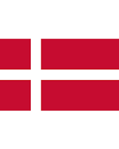
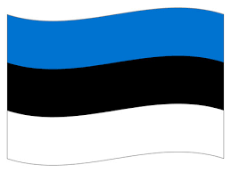
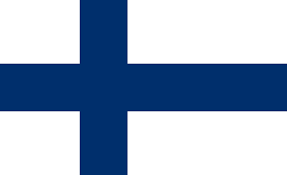
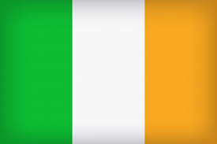
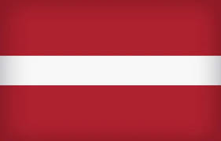
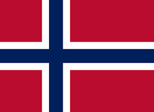
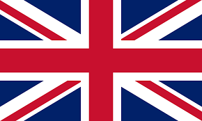

Day 2: Exploring Northern Europe
Introduction to Northern Europe
Northern Europe is known for its stunning landscapes, including fjords, forests, and lakes. It has a rich Viking history and vibrant capital cities with modern architecture.
Big Cities
Copenhagen, Stockholm, and Oslo are some of the largest cities, each offering unique historical landmarks and modern attractions.
Famous Places
Northern Europe boasts breathtaking sights like the Northern Lights, Iceland's Blue Lagoon, and the Royal Palace in Oslo.
Culture
Languages like Danish, Swedish, and Finnish are spoken here. Traditional foods include herring, meatballs, and rye bread. Festivals such as Midsummer are celebrated across the region.
Heroes
Notable figures from Northern Europe include Alfred Nobel, who founded the Nobel Prizes, and Leif Erikson, the Viking explorer who reached North America.
Countries, Their Flags, and Capital Cities in Northern Europe
| Country | Flag | Capital City |
|---|---|---|
| Denmark |  | Copenhagen |
| Estonia |  | Tallinn |
| Finland |  | Helsinki |
| Iceland |  |
Reykjavik |
| Ireland |  | Dublin |
| Latvia |  | Riga |
| Lithuania |  |
Vilnius |
| Norway |  | Oslo |
| Sweden |  |
Stockholm |
| United Kingdom |  | London |
Denmark


Sweden


Did you know?
Did you know that Northern Europe has some of the world's happiest countries, including Finland and Denmark?
Did you know that the Northern Lights, visible in countries like Norway and Iceland, are one of the most famous natural phenomena?
Did you know that Iceland is home to the world’s first parliament, established in 930 AD?
Did you know that Sweden has more than 100,000 lakes, making it a haven for nature lovers?
Did you know that Estonia is one of the most digitally advanced countries, offering free public Wi-Fi throughout the country?